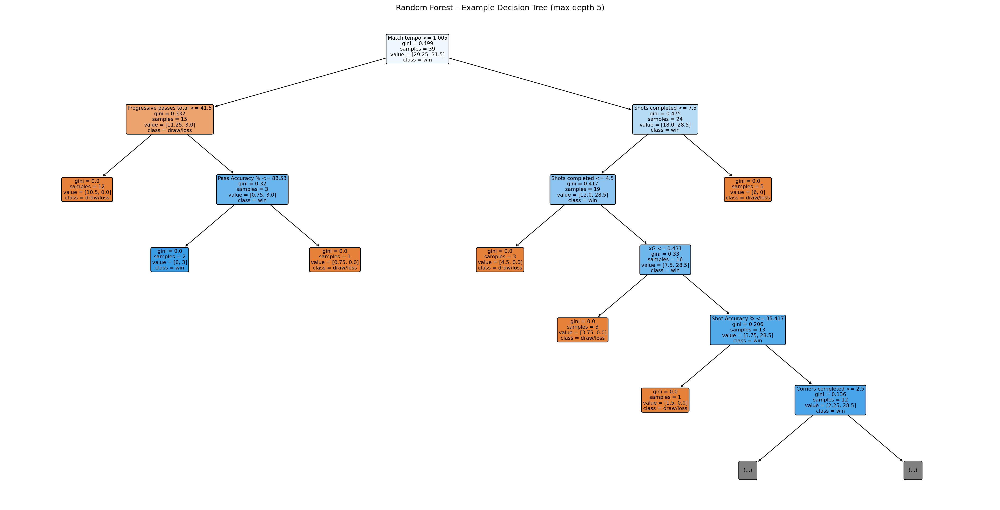
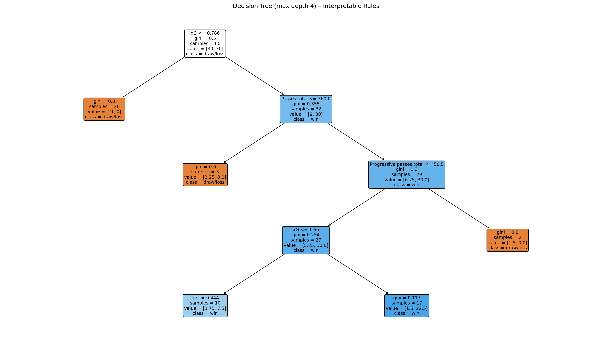

General Team Analytics – Synthetic Seasons
Interactive, Production-Grade Performance Analysis
Comprehensive team analytics using realistic synthetic data across four seasons, including correlation analysis, radar comparisons, seasonal evolution, and executive insights.
Executive Summary
Our synthetic Home Team exhibits a data-driven, possession-oriented identity with consistent advantages in passing, progressive play, and penalty-area presence. The following modules surface the same production-grade insights we deliver on client data—correlations to winning, radar comparisons, seasonal evolution, and tactical recommendations.
Performance Correlation Analysis
What this shows
- Horizontal bars for the metrics most correlated with winning for the Home Team. Green bars increase the chance of winning when the metric rises; red bars decrease it.
How to use
- Hover for exact correlation values (r). Use the left/right extremes to prioritize training and tactical focus: maximize strong positives, mitigate strong negatives.
Radar Comparison (Season Selector)
What this shows
- A season-by-season “shape” comparison between the Home Team and Opponents across key dimensions (accuracy, progression, tempo, set pieces). Values are standardized to show relative strength in each metric.
How to use
- Use the season dropdown to switch seasons. Larger area from center indicates stronger relative performance. Compare which axes (metrics) expand/contract across seasons to track style and strengths.
2024 Focus: Key Metrics Comparison
What this shows
- A side‑by‑side comparison for 2024 between Home and Opponents for a selected key metric (e.g., XG Efficiency, Shot/Pass Accuracy %, PPDA, Tempo).
How to use
- Use the dropdown to change the metric. Read the y‑axis to compare levels; use this to communicate concrete performance gaps in 2024.
Seasonal Evolution Heatmap (Sign of Change)
/tmp/ipykernel_14646/1982108479.py:14: FutureWarning:
DataFrame.applymap has been deprecated. Use DataFrame.map instead.
What this shows
- Heatmap of direction of season‑over‑season change for selected metrics. Green means improvement vs previous season; red means decline. Cell labels show % change.
How to use
- Scan rows to spot persistent trends. Focus corrective actions where you see consecutive red seasons; double‑down where you see improving green sequences.
Executive Recommendations
Strategic Focus
- Optimize final third efficiency: sustain high touches in the box with shot quality
- Maintain possession and passing control to dictate tempo
- Keep PPDA low via organized pressing and compact defensive shape
- Leverage set pieces (corners) as repeatable goal opportunities
Implementation Pathway
- Weekly reviews of Shot Accuracy %, Touches in Penalty Area, and Pass Accuracy %
- Tactical sessions on progressive play to sustain box entries
- Set piece playbook with roles optimized by aerial duel strengths
Advanced ML: Random Forest Feature Importance (Win Prediction)
What this shows
- Feature importance from a Random Forest trained to classify win vs non‑win. Higher importance implies greater predictive contribution.
How to use
- Treat importances as a ranked list of levers. Combine with correlation results to choose high‑impact, controllable metrics for game‑model emphasis.
Visualize Trees and Model Performance


What this shows
- Example Decision Tree from the forest (read path from root to leaf), plus the RF confusion matrix (accuracy patterns) and a compact standalone Decision Tree for rule‑based interpretation.
How to use
- Use the tree diagrams to explain decision logic to staff. Use the confusion matrix to validate model balance (wins vs non‑wins). The shallow tree offers human‑readable rules for scouting and match planning.
Playing Style Clusters: PCA + KMeans
What this shows
- PCA map of matches, colored by KMeans clusters (style archetypes). Cluster profile chart summarizes how clusters differ on any metric.
How to use
- Identify recurring playing styles (pressing/tempo/possession vs direct play). Use the dropdown in the profile chart to examine which metrics define each cluster; plan training for desired cluster tendencies.
Nearest Match Explorer (KNN)
What this shows
- For any selected match, the most similar past matches (by multi‑metric distance), with similarity score.
How to use
- Pick a match from the dropdown to surface analogues. Review video/notes from nearest matches to prepare tactical plans or post‑match reviews.